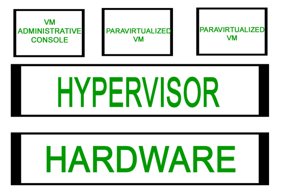
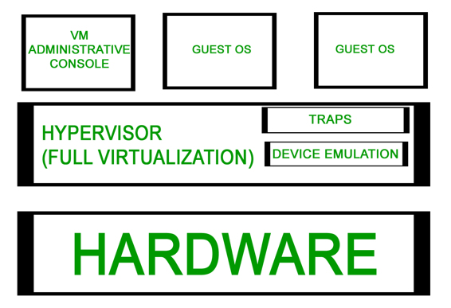
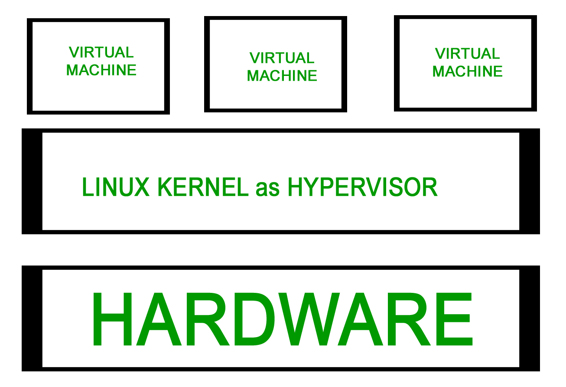
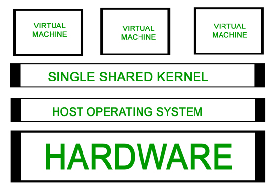

Server Virtualization is the partitioning of a physical server into number of small virtual servers, each running its own operating system. These operating systems are known as guest operating systems. These are running on another operating system known as host operating system. Each guest running in this manner is unaware of any other guests running on the same host. Different virtualization techniques are employed to achieve this transparency.
Types of Server virtualization :
- Hypervisor –
A Hypervisor or VMM(virtual machine monitor) is a layer that exits between the operating system and hardware. It provides the necessary services and features for the smooth running of multiple operating systems.
It identifies traps, responds to privileged CPU instructions and handles queuing, dispatching and returning the hardware requests. A host operating system also runs on top of the hypervisor to administer and manage the virtaul machines.
- Para Virtualization –
It is based on Hypervisor. Much of the emulation and trapping overhead in software implemented virtualisation is handled in this model. The guest operating system is modified and recompiled before installation into the virtual machine.
Due to the modification in the Guest operating system, performance is enhanced as the modified guest operating system communicates directly with the hypervisor and emulation overhead is removed.
Example : Xen primarily uses Para virtualisation, where a customised Linux environment is used to supportb the administrative environment known as domain 0.
Advantages:
- Easier
- Enhanced Performance
- No emulation overhead
Limitations:
- Requires modification to guest operating system
- Full Virtualization –
It is very much similar to Para virtualisation. It can emulate the underlying hardware when necessary. The hypervisor traps the machine operations used by the operating system to perform I/O or modify the system status. After trapping, these operations are emulated in software and the status codes are returned very much consistent with what the real hardware would deliver. This is why unmodified operating system is able to run on top of the hypervisor.
Example : VMWare ESX server uses this method. A customised Linux version known as Service Console is used as the administrative operating system. It is not as fast as Para virtualisation.
Advantages:
- No modification to Guest operating system required.
Limitations:
- Complex
- Slower due to emulation
- Installation of new device driver difficult.
- Hardware Assisted Virtualization –
It is similar to Full Virtualisation and Para virtualisation in terms of operation except that it requires hardware support. Much of the hypervisor overhead due to trapping and emulating I/O operations and status instructions executed within a guest OS is dealt by relying on the hardware extensions of the x86 architecture.
Unmodified OS can be run as the hardware support for virtualisation would be used to handle hardware access requests, privileged and protected operations and to communicate with the virtual machine.
Examples : AMD – V Pacifica and Intel VT Vanderpool provides hardware support for virtualisation.Advantages:
- No modification to guest operating system required.
- Very less hypervisor overhead
Limitations:
- Hardware support Required
- Kernel level Virtualization –
Instead of using a hypervisor, it runs a separate version of the Linux kernel and sees the associated virtual machine as a user – space process on the physical host. This makes it easy to run multiple virtual machines on a single host. A device driver is used for communication between the main Linux kernel and the virtual machine.
Processor support is required for virtualisation( Intel VT or AMD – v). A slightly modified QEMU process is used as the display and execution containers for the virtual machines. In many ways, kernel level virtualization is a specialised form of server virtualization.Examples: User – Mode Linux( UML ) and Kernel Virtual Machine( KVM )

Advantages:
- No special administrative software required.
- Very less overhead
Limitations:
- Hardware Support Required
- System Level or OS Virtualization –
Runs multiple but logically distinct environments on a single instance of operating system kernel. Also called shared kernel approach as all virtual machines share a common kernel of host operating system. Based on change root concept “chroot”.
chroot starts during boot up. The kernel uses root filesystems to load drivers and perform other early stage system initialisation tasks. It then switches to another root filesystem using chroot command to mount an on -disk file system as its final root filesystem, and continue system initialization and configuration within that file system.
The chroot mechanism of system level virtualisation is an extension of this concept. It enables the system to start virtual servers with their own set of processes which execute relative to their own filesystem root directories.
The main difference between system level and server virtualisation is wether different operating systems can be run on different virtual systems. If all virtual servers must share the same copy of operating system it is system level virtualisation and if different servers can have different operating systems ( including different versions of a single operating system) it is server virtualisation.Examples: FreeVPS, Linux Vserver and OpenVZ are some examples.

Advantages:
- Significantly light weight than complete machines(including a kernel)
- Can host many more virtual servers
- Enhanced Security and isolation
Limitations:
- Kernel or driver problem can take down all virtual servers.
Reference:
Types of Server Virtualisation